k8s容器编排系统
k8S是谷歌几十年来研发的一套系统，更新了运维领域的玩法。
内容很多，先快速练习玩法，知道是什么就行。
具体【为什么】再花时间慢慢学吧！
0.参考资料
1. k8s能干什么
https://kubernetes.io/zh-cn/docs/concepts/overview/#why-you-need-kubernetes-and-what-can-it-do
2.docker资料
https://docs.docker.com/get-started/
3.kubeadm创建k8s集群
https://kubernetes.io/zh-cn/docs/setup/production-environment/tools/kubeadm/
4.prometheus资料
https://prometheus.io/docs/introduction/overview/
5.ansible安装k8s工具，阅读优秀剧本，也可以快速理解k8s架构，如何部署
https://github.com/easzlab/kubeasz
6.阿里云k8s资料（生产最佳推荐）
https://www.aliyun.com/product/kubernetes
7.查询k8s多版本的API黑科技
https://k8s.mybatis.io/v1.19/
8.自动生成yaml黑科技
https://k8syaml.com/
1.k8s软件介绍
纯容器的部署问题
纯docker的运行模式，是一个docker主机，单独管理一堆容器应用，但是发现数量多了之后，配置复杂之后，难以维护管理多个容器。 并且跨主机下的容器集群，更是维护复杂。
- 业务容器数量庞大，哪些容器部署在哪些节点，使用了哪些端口，如何记录、管理，需要登录到每台机器去管理？
- 跨主机通信，多个机器中的容器之间相互调用如何做，iptables规则手动维护？
- 跨主机容器间互相调用，配置如何写？写死固定IP+端口？
- 如何实现业务高可用？多个容器对外提供服务如何实现负载均衡？
- 容器的业务中断了，如何可以感知到，感知到以后，如何自动启动新的容器?
- 如何实现滚动升级保证业务的连续性？
- ......
k8s是什么
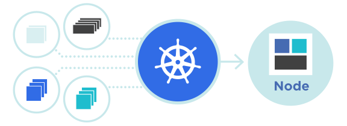
Kubernetes 也称为 K8s，是用于自动部署、扩缩和管理容器化应用程序的开源系统。
它将组成应用程序的容器组合成逻辑单元，以便于管理和服务发现。
Kubernetes 源自Google 15 年生产环境的运维经验，同时凝聚了社区的最佳创意和实践。
Google 每周运行数十亿个容器，Kubernetes 基于与之相同的原则来设计，能够在不扩张运维团队的情况下进行规模扩展。
从官方资料来看，就已经解决了上述提及的纯容器化管理的问题。
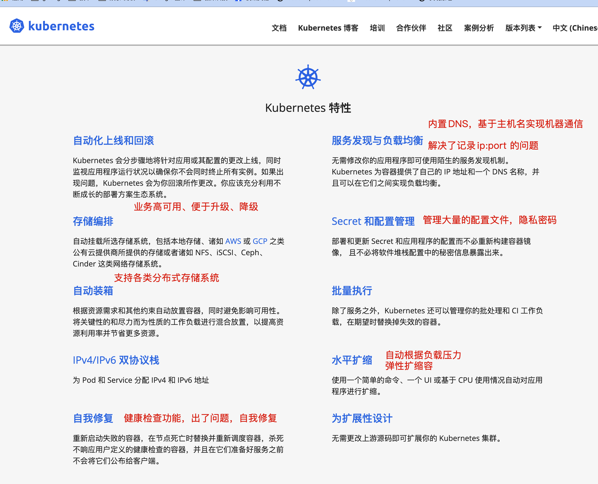
架构演进历史，为何会出现k8s技术
官网资料
https://kubernetes.io/zh-cn/docs/concepts/overview/
简单总结就是
1.传统物理机部署，资源利用率低，难以迁移
2.升级虚拟化时代，基于vm技术实现资源隔离，是一个完整的OS
3.升级容器时代，容器共享宿主机OS，且有自己的名称空间，有诸多特性。
容器因具有许多优势而变得流行起来，例如：
- 敏捷应用程序的创建和部署：与使用 VM 镜像相比，提高了容器镜像创建的简便性和效率。
- 持续开发、集成和部署：通过快速简单的回滚（由于镜像不可变性）， 提供可靠且频繁的容器镜像构建和部署。
- 关注开发与运维的分离：在构建、发布时创建应用程序容器镜像，而不是在部署时， 从而将应用程序与基础架构分离。
- 可观察性：不仅可以显示 OS 级别的信息和指标，还可以显示应用程序的运行状况和其他指标信号。
- 跨开发、测试和生产的环境一致性：在笔记本计算机上也可以和在云中运行一样的应用程序。
- 跨云和操作系统发行版本的可移植性：可在 Ubuntu、RHEL、CoreOS、本地、 Google Kubernetes Engine 和其他任何地方运行。
- 以应用程序为中心的管理：提高抽象级别，从在虚拟硬件上运行 OS 到使用逻辑资源在 OS 上运行应用程序。
- 松散耦合、分布式、弹性、解放的微服务：应用程序被分解成较小的独立部分， 并且可以动态部署和管理 - 而不是在一台大型单机上整体运行。
- 资源隔离：可预测的应用程序性能。
- 资源利用：高效率和高密度。
为什么又会出现k8s？
容器是打包和运行应用程序的好方式。
在生产环境中， 你需要管理运行着应用程序的容器，并确保服务不会下线。
例如，如果一个容器发生故障，则你需要启动另一个容器。
如果这个过程，是自动创建容器，自动生成新容器，保证业务高可用，是不是更nb？
k8s就是实现容器自动化管理的一个框架系统。
k8s是一个平台框架
k8s提供了很多的功能，简化了对容器的部署管理；
- 基于容器对应用的发布管理、更新、升级、降级；
- 负载均衡、服务发现
- 跨机器、跨地区的网络模式
- 自动扩缩容功能
- 针对如nginx无状态服务的运行组件、如mysql等有状态服务的运行组件
- 支持丰富的插件
k8s并不是包罗万象的，它本身只有自己的一些组件，而其他功能，如消息队列，数据库，存储等都需要额外安装在k8s上
2.k8s核心架构组件
如何设计一个容器管理平台？
- 集群架构，管理节点分发容器到数据节点
- 如何部署业务容器到各数据节点
- N个数据节点，业务容器如何选择部署在最合理的节点
- 容器如何实现多副本，如何满足每个机器部署一个容器的模型
- 多副本如何实现集群内负载均衡
分布式系统，两类角色：管理节点和工作节点
系统架构来看，k8s分为2个节点
master 控制节点、工头
node 工作节点、工人
核心组件
Kubernetes 主要由以下几个核心组件组成：
- etcd 保存了整个集群的状态，分布式高性能数据库。
- api-server 提供了资源操作的唯一入口，并提供认证、授权、访问控制、API 注册和发现等机制；
- controller manager 负责维护集群的状态，比如故障检测、自动扩展、滚动更新等；
- Replication Controller
- Node controller
- ResourceQuota Controller
- Namespace Controller
- ServiceAccount Controller
- Token Controller
- Service Controller
- Endpoints Controller
- scheduler 负责资源的调度，按照预定的调度策略将 Pod 调度到相应的Node机器上；
- kubelet 负责维护容器的生命周期，同时也负责 Volume（CVI）和网络（CNI）的管理；
- 运行在每一个node节点上的
代理软件，脏活累活都是它干； - pod 管理：
- kubelet 定期从所监听的数据源获取节点上 pod/container 的期望状态（运行什么容器、运行的副本数量、网络或者存储如何配置等等），并调用对应的容器平台接口达到这个状态。
- 容器健康检查：
- kubelet 创建了容器之后还要查看容器是否正常运行，如果容器运行出错，就要根据 pod 设置的重启策略进行处理.
- 容器监控：
- kubelet 会监控所在节点的资源使用情况，并定时向 master 报告，资源使用数据都是通过 cAdvisor 获取的。知道整个集群所有节点的资源情况，对于 pod 的调度和正常运行至关重要。
- 运行在每一个node节点上的
- Container runtime 负责镜像管理以及 Pod 和容器的真正运行（CRI）；
- kube-proxy 负责为 Service 提供 cluster 内部的服务发现和负载均衡，主要提供iptables、ipvs规则。
- kubectl:
- 命令行接口，用于对 Kubernetes 集群运行命令 https://kubernetes.io/zh/docs/reference/kubectl/
组件架构图
k8s集群是被一组称之为Node的节点机器组成，这些节点上运行k8s管理的容器进程。
具体Node节点机器上运行的容器被一个叫做Pod的组件管理；
在你安装完毕k8s之后，就得到了一个集群环境；
- 集群是指有一堆Node节点机器，并且这些节点运行pod，也就是容器了。
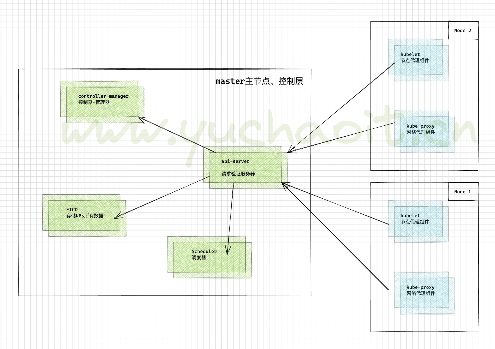
更详细的组件通信流程

这些组件，架构图，先不用看，回头，环境部署好了，再逐步回来理解。
k8s集群端口信息
master
Master node(s)
| Protocol | Direction | Port Range | Purpose |
|---|---|---|---|
| TCP | Inbound | 6443* | Kubernetes API server |
| TCP | Inbound | 8080 | Kubernetes API insecure server |
| TCP | Inbound | 2379-2380 | etcd server client API |
| TCP | Inbound | 10250 | Kubelet API |
| TCP | Inbound | 10251 | kube-scheduler healthz |
| TCP | Inbound | 10252 | kube-controller-manager healthz |
| TCP | Inbound | 10253 | cloud-controller-manager healthz |
| TCP | Inbound | 10255 | Read-only Kubelet API |
| TCP | Inbound | 10256 | kube-proxy healthz |
node
Worker node(s)
| Protocol | Direction | Port Range | Purpose |
|---|---|---|---|
| TCP | Inbound | 4194 | Kubelet cAdvisor |
| TCP | Inbound | 10248 | Kubelet healthz |
| TCP | Inbound | 10249 | kube-proxy metrics |
| TCP | Inbound | 10250 | Kubelet API |
| TCP | Inbound | 10255 | Read-only Kubelet API |
| TCP | Inbound | 10256 | kube-proxy healthz |
| TCP | Inbound | 30000-32767 | NodePort Services** |
架构图
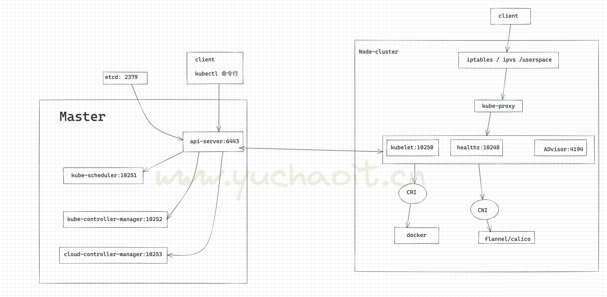
组件通信流程
Kubernetes 主要由以下几个核心组件组成:
- etcd 保存了整个集群的状态；
- API Server 提供了资源操作的唯一入口，并提供认证、授权、访问控制、API 注册和发现等机制；
- Controller Manager 负责维护集群的状态，比如故障检测、自动扩展、滚动更新等；
- Scheduler 负责资源的调度，按照预定的调度策略将 Pod 调度到相应的机器上；
- Kubelet 负责维护容器的生命周期，同时也负责 Volume（CVI）和网络（CNI）的管理；
- Container Runtime 负责镜像管理以及 Pod 和容器的真正运行（CRI）；
- Kube-proxy 负责为 Service 提供 cluster 内部的服务发现和负载均衡；
3.master节点组件
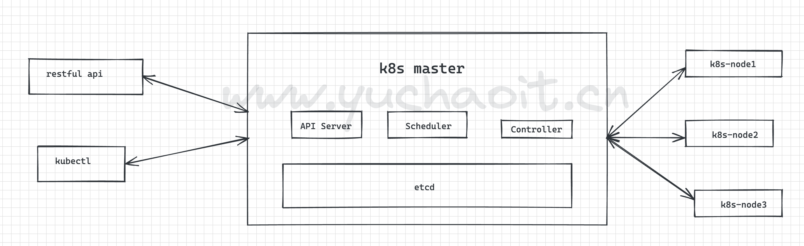
api-server
1.提供k8s api接口，处理所有rest操作，接收增删改查所有被允许的请求、以及更新etcd中的对象
2.是增删改查k8s所有资源得唯一入口
3.对请求进行认证、授权校验。
Scheduler
资源调度器
根据etcd里写入的资源状态，决定pod绑定到哪个node
controller manager
控制器 管理器
1. 负责保障pod的健康状态
2. 资源对象的控制中心，k8s里有很多种类的控制器
https://pkg.go.dev/k8s.io/kubernetes/pkg/controller
$ cd kubernetes/pkg/controller/
$ ls -d */
deployment/ job/ podautoscaler/
cloud/ disruption/ namespace/
replicaset/ serviceaccount/ volume/
cronjob/ garbagecollector/ nodelifecycle/ replication/ statefulset/ daemon/
...
etcd
k8s使用的数据库，持久化的所有资源的信息，写入在etcd。
kubectl
kubectl是管理k8s集群的客户端工具
运维小于通过kubectl命令和api-server交互、并且得到反馈结果，从而实现对k8s集群的管理
4.node节点组成
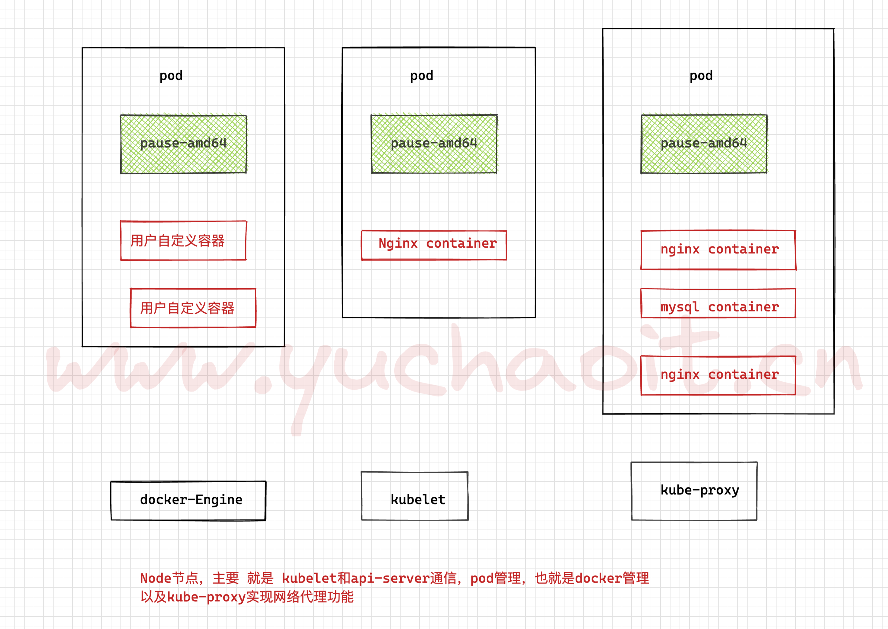
pause-amd64是Kubernetes基础设施的一部分，Kubernetes管理的所有pod里，pause-amd64容器是第一个启动的，用于实现Kubernetes集群里pod之间的网络通讯。
pause container作为pod里其他所有container的parent container，主要有两个职责：
是pod里其他容器共享Linux namespace的基础
扮演PID 1的角色，负责处理僵尸进程
Kubernetes的官网解释：
it's part of the infrastructure. This container is started first in all Pods to setup the network for the Pod.
https://github.com/kubernetes/kubernetes/tree/master/build/pause
参考资料
https://jimmysong.io/kubernetes-handbook/concepts/pause-container.html
CRI
https://kubernetes.io/zh-cn/docs/setup/production-environment/container-runtimes/
容器运行时，这是k8s组件之一，负责容器运行。
默认情况，k8s使用CRI容器运行时接口，和你部署的容器交互。
如果同时检测你部署了docker egnine、containerd两款容器，优先会选用docker。
kubelet软件通过内置的 dockershim CRI和docker通信。
docker engine
https://kubernetes.io/zh-cn/docs/setup/production-environment/container-runtimes/#docker
负责Node上容器的管理工作，创建docker容器实例。
kubelet
安装在Node节点上的代理程序，用来管理Pod、容器、镜像、Volume等
kube-proxy
安装在Node上的网络代理程序，提供网络代理、负载均衡、和Service通讯。
5.K8S重要资源（学会用k8s就靠这个）
Node
这里不属于k8s的资源，属于重要概念
Node 是 Pod 真正运行的主机，可以是物理机，也可以是虚拟机。
为了管理 Pod，每个 Node 节点上至少要运行 container runtime（比如 docker 或者 rkt）、kubelet 和 kube-proxy 服务。
container
这里不属于k8s的资源，属于重要概念
Container（容器）是一种便携式、轻量级的操作系统级虚拟化技术。
它使用 namespace 隔离不同的软件运行环境，并通过镜像自包含软件的运行环境，从而使得容器可以很方便的在任何地方运行。
由于容器体积小且启动快，因此可以在每个容器镜像中打包一个应用程序。这种一对一的应用镜像关系拥有很多好处。使用容器，不需要与外部的基础架构环境绑定, 因为每一个应用程序都不需要外部依赖，更不需要与外部的基础架构环境依赖。完美解决了从开发到生产环境的一致性问题。
容器同样比虚拟机更加透明，这有助于监测和管理。尤其是容器进程的生命周期由基础设施管理，而不是被进程管理器隐藏在容器内部。最后，每个应用程序用容器封装，管理容器部署就等同于管理应用程序部署。
其他容器的优点还包括
- 敏捷的应用程序创建和部署: 与虚拟机镜像相比，容器镜像更易用、更高效。
- 持续开发、集成和部署: 提供可靠与频繁的容器镜像构建、部署和快速简便的回滚（镜像是不可变的）。
- 开发与运维的关注分离: 在构建/发布时即创建容器镜像，从而将应用与基础架构分离。
- 开发、测试与生产环境的一致性: 在笔记本电脑上运行和云中一样。
- 可观测：不仅显示操作系统的信息和度量，还显示应用自身的信息和度量。
- 云和操作系统的分发可移植性: 可运行在 Ubuntu, RHEL, CoreOS, 物理机, GKE 以及其他任何地方。
- 以应用为中心的管理: 从传统的硬件上部署操作系统提升到操作系统中部署应用程序。
- 松耦合、分布式、弹性伸缩、微服务: 应用程序被分成更小，更独立的模块，并可以动态管理和部署 - 而不是运行在专用设备上的大型单体程序。
- 资源隔离：可预测的应用程序性能。
- 资源利用：高效率和高密度。
1.Pod
Kubernetes 使用 Pod 来管理容器，每个 Pod 可以包含一个或多个紧密关联的容器。
Pod 是一组紧密关联的容器集合，它们共享 进程间通信 和 Network namespace，是 Kubernetes 调度的基本单位。
Pod 内的多个容器共享网络和文件系统，可以通过进程间通信和文件共享这种简单高效的方式组合完成服务。
Pod的设计理念是支持多个容器在一个Pod中共享网络地址和文件系统，可以通过进程间通信和文件共享这种简单高效的方式组合完成服务。
Pod是K8s集群中所有业务类型的基础，可以看作运行在K8s集群中的小机器人，不同类型的业务就需要不同类型的小机器人去执行。
- 目前K8s中的业务主要可以分为长期伺服型（long-running）、批处理型（batch）、节点后台支撑型（node-daemon）和有状态应用型（stateful application）；
- 分别对应的小机器人控制器为Deployment、Job、DaemonSet和StatefulSet。
1. Pod是在K8s集群中运行部署应用或服务的最小单元，它是可以支持多容器的。
2. pod的IP是随机变化的，删除pod，IP变化
3. pod内都有一个根容器
4. 一个pod内可以有一个、多个容器
5.一个pod内的所有容器，共享根容器的网络名称空间，文件系统，进程资源
6.一个pod内的容器网络地址，由根容器提供。
pod图解
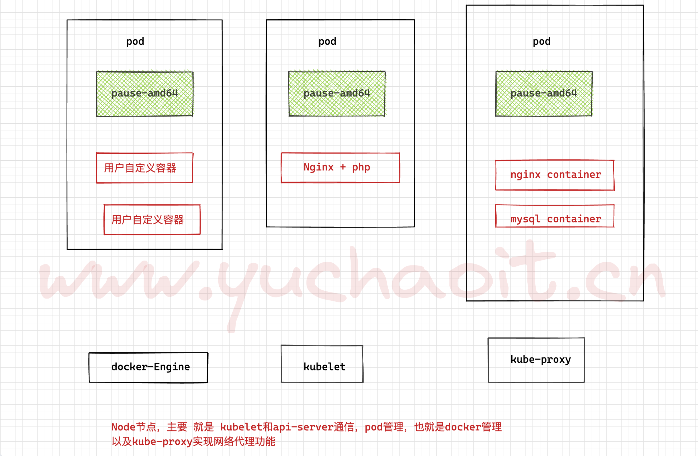
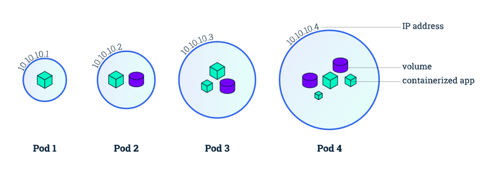
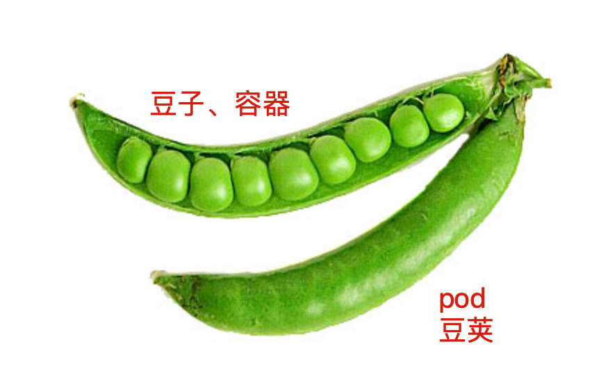
创建pod请求走向
Kubernetes 多组件之间的通信原理为
- API Server 负责 etcd 存储的所有操作，且只有 API Server 才直接操作 etcd 集群
- API Server 对内（集群中的其他组件）和对外（用户）提供统一的 REST API，其他组件均通过 API Server 进行通信
- Controller Manager、Scheduler、Kube-proxy 和 Kubelet 等均通过 API Server watch API 监测资源变化情况，并对资源作相应的操作
- 所有需要更新资源状态的操作均通过 API Server 的 REST API 进行
- API Server 也会直接调用 Kubelet API（如 logs, exec, attach 等），默认不校验 Kubelet 证书，但可以通过
--kubelet-certificate-authority开启（而 GKE 通过 SSH 隧道保护它们之间的通信）
面试题（pod如何被创建的）
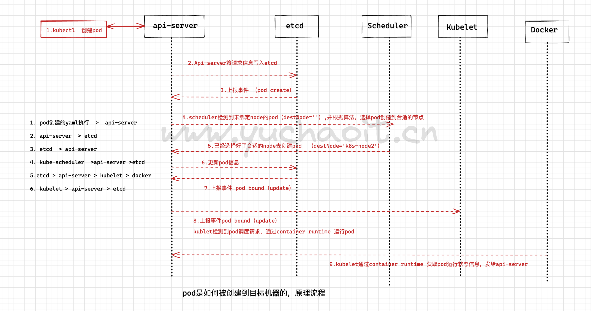
于超老师教你怎么说哈！
1. 运维执行创建pod的请求（一个yaml文件、记录了业务应用的名字，镜像，如何部署等信息），提交给api-server
2.api-server接收请求后将资源清单的信息写入etcd
3.etcd存好信息后反馈api-server
4.api-server告知scheduler事件信息，schduler发现有一个新pod但是没绑定node，通过资源清单信息以及算法选择合适的node进行和pod绑定
5.将要pod和node绑定的信息告诉api-server
6.api-server将调度结果写入etcd
7.etcd更新好pod信息后继续反馈api-server
8.此时kubelet组件（目标node）watch到有一个新pod被分配过来了，获取pod信息，根据pod描述内容创建对应容器
9.kubelet反馈pod创建结果（docker信息）给api-server，且写入etcd
10.最终结束一个pod的完整创建流程。
架构组件的认识
- 系统各个组件分工明确(APIServer是所有请求入口，CM是控制中枢，Scheduler主管调度，而Kubelet负责运行)，配合流畅，整个运行机制一气呵成。
- 除了配置管理和持久化组件ETCD，其他组件并不保存数据。意味
除ETCD外其他组件都是无状态的。 - 因此从架构设计上对kubernetes系统高可用部署提供了支撑。
- 同时因为组件无状态，组件的升级，重启，故障等并不影响集群最终状态，只要组件恢复后就可以从中断处继续运行。
- 各个组件和kube-apiserver之间的数据推送都是通过list-watch机制来实现。
容器运行状态
创建pod是为了运行容器、容器有运行状态，表现为创建的成功、失败、问题。
https://kubernetes.io/zh-cn/docs/concepts/workloads/pods/pod-lifecycle/
Kubernetes 会跟踪 Pod 中每个容器的状态，就像它跟踪 Pod 总体上的阶段一样。 你可以使用容器生命周期回调 来在容器生命周期中的特定时间点触发事件。
一旦调度器将 Pod 分派给某个节点，kubelet 就通过 容器运行时 开始为 Pod 创建容器。 容器的状态有三种：Waiting（等待）、Running（运行中）和 Terminated（已终止）。
要检查 Pod 中容器的状态，你可以使用 kubectl describe pod <pod 名称>。 其输出中包含 Pod 中每个容器的状态。
每种状态都有特定的含义：
Waiting （等待）
如果容器并不处在 Running 或 Terminated 状态之一，它就处在 Waiting 状态。 处于 Waiting 状态的容器仍在运行它完成启动所需要的操作：例如，从某个容器镜像 仓库拉取容器镜像，或者向容器应用 Secret 数据等等。 当你使用 kubectl 来查询包含 Waiting 状态的容器的 Pod 时，你也会看到一个 Reason 字段，其中给出了容器处于等待状态的原因。
Running（运行中）
Running 状态表明容器正在执行状态并且没有问题发生。 如果配置了 postStart 回调，那么该回调已经执行且已完成。 如果你使用 kubectl 来查询包含 Running 状态的容器的 Pod 时，你也会看到 关于容器进入 Running 状态的信息。
Terminated（已终止）
处于 Terminated 状态的容器已经开始执行并且或者正常结束或者因为某些原因失败。 如果你使用 kubectl 来查询包含 Terminated 状态的容器的 Pod 时，你会看到 容器进入此状态的原因、退出代码以及容器执行期间的起止时间。
如果容器配置了 preStop 回调，则该回调会在容器进入 Terminated 状态之前执行。
2.Label
Label也是经常面试爱问的点
Label 是识别 Kubernetes 对象的标签，以 key/value 的方式附加到对象上（key 最长不能超过 63 字节，value 可以为空，也可以是不超过 253 字节的字符串）。
Label 不提供唯一性，并且实际上经常是很多对象（如 Pods）都使用相同的 label 来标志具体的应用。
Label 定义好后其他对象可以使用 Label Selector 来选择一组相同 label 的对象（比如 ReplicaSet 和 Service 用 label 来选择一组 Pod）。Label Selector 支持以下几种方式：
- 等式，如
app=nginx和env!=production - 集合，如
env in (production, qa) - 多个 label（它们之间是 AND 关系），如
app=nginx,env=test
1. label就像身份证标签一样，用于标识k8s的对象。
2. 我们传统的对机器上应用查找，都是基于ip:port，但是在k8s里，更多匹配关系，都是通过label来查找。
3.Namespace
k8S里可以基于创建namespace，管理不同环境下的资源，也是一个重要资源，形成逻辑上的不同的项目组。
Namespace 是对一组资源和对象的抽象集合，比如可以用来将系统内部的对象划分为不同的项目组或用户组。
常见的 pods, services, replication controllers 和 deployments 等都是属于某一个 namespace 的（默认是 default）
而 node, persistentVolumes 等则不属于任何 namespace。
4.Controller
k8s控制器种类有很多，用来在不同的场景，如何更好的管理Pod
1. 上面于超老师也说了，POD可以理解为k8s里面的干活的小机器人，不同的类型都要用不同的机器人去执行。
2. 控制这些小机器人的控制器，就主要分为
Replication Controller
也叫RC控制器，副本控制器、控制pod的副本数
RC是K8s集群中最早的保证Pod高可用的API对象。
通过监控运行中的Pod来保证集群中运行指定数目的Pod副本。
指定的数目可以是多个也可以是1个；
- 当少于指定数目，RC就会启动运行新的Pod副本；
- 多于指定数目，RC就会杀死多余的Pod副本。
- 严格根据你定义的数量，确保POD数量
即使在指定数目为1的情况下，通过RC运行Pod也比直接运行Pod更明智，因为RC也可以发挥它高可用的能力，保证永远有1个Pod在运行。（pod挂了，容器就挂了，机器人也就挂了，有控制在，就不怕应用挂了）
RC是K8s较早期的技术概念，比如控制小机器人提供高可用的Web服务，启动如3个pod副本，也就是3套应用后端。
Replica Set，RS
RS是RC控制器的下一代，也提供副本数，确保pod（容器的高可用）。
RS控制器一般不会直接用，而是结合另一种控制器（Deployment）以及更多参数使用。
Deployment
部署控制器、主要用k8s部署应用就是靠这个。
Deployment表示用户对K8s集群的一次更新操作。
部署是一个比RS应用模式更广的API对象，可以是创建一个新的服务，更新一个新的服务，也可以是滚动升级一个服务。
滚动升级一个服务，实际是创建一个新的RS，然后逐渐将新RS中副本数增加到理想状态，将旧RS中的副本数减小到0的复合操作；
这样一个复合操作用一个RS是不太好描述的，所以用一个更通用的Deployment来描述。
以K8s的发展方向，未来对所有长期服务型的的业务的管理，都会通过Deployment来管理。
（LNMP就是典型代表，需要高可用、负载均衡的应用集群，积极更新多个后端、这些所有的）
长期服务型的应用特点在于业务应用提供访问，有的Node上可能有改pod、有的Node可以没有；
DaemonSet
- 后台支撑服务集控制器的功能在于关注k8s中的Node（物理机、虚拟机）
- 能保证每个节点上都有一个此类的Pod在运行
- 这种特性，就很实用用于部署如监控软件的agent，采集每一个目标Node的资源数据。
- 节点可以所有集群中的机器，也可能是基于NodeSelector选定的部分节点。
- DaemonSet主要用于
- 日志采集
- 监控采集
- 存储
- 这几类服务的运行
SeatefulSet
有状态服务集在k8s1.3版本后发布，之前于超老师说过，nginx此类的应用一般是无状态的，可以随意创建，删除；
还有一种就是有状态（stateful）的应用、
RC、RS、deployment主要提供无状态服务的部署，其pod的名字也都是随机生成的，一个pod挂了随意重建一个就好，pod的名字、在哪个node启动都无所谓，只要保证pod总数即可。
而stateful用来控制有状态服务，每一个pod的名字是预先定义好的，不能更改；
无状态的pod一般不会挂载存储、保证pod共享状态即可，可以随意创建，删除；
有状态的pod，pod都会单独挂在一个存储，如果pod出了问题，其他节点要重新创建pod，并且获取原有pod的存储信息，继续提供有状态服务。
这个特性明显就是提供给数据库使用。
5.Service
上述讲的pod控制器，是实现了pod、容器被创建在目标Node机器，以及确保了数量、副本数；
但是目前还没说，这些pod改如何访问？分散在不同的机器，通过什么ip去访问？
一个pod是一个运行服务的实例，随时可能在某一个Node上运行，另一个Node上以一个新pod启动的话，IP又变化了。
因此没法确定ip、port去访问具体的pod。
因此Service组件就诞生了，为了解决服务发现、负载均衡的能力。
服务发现就是指针对客户端的访问请求，找到对应后端的pod实例。
在k8s里，客户端访问的服务入口就是service组件、Service定义了集群内部的一个虚拟ip作为入口，用来将后端的pod服务暴露给集群外的用户访问。
问题是，pod会随时随地被销毁，创建，ip也不固定，Service又是如何找到Pod？
因此k8s为了解决这个问题，在Pod_IP之外创建了一个ClusterIP，这个IP创建后就不再变化了，除非主动被删除重建。
因此我们会创建ClusterIP类型的Service资源，然后通过label标签和具体的pod绑定关系，因此实现了集群内pod的负载均衡，ClusterIP的请求被转发给了后端的pod。
问题又来了、ClusterIP可以让我们访问到后端的pod、但是ClusterIP也还是k8s集群内的虚拟IP，只能在集群内部的机器访问。
集群外的用户如何访问？
如运维小于只能通过浏览器去访问k8s所在机器的物理网卡提供的真实IP:PORT去访问。
因此最终k8s提供了一种叫做NodePort的方式，实现了端口映射
https://kubernetes.io/zh-cn/docs/concepts/services-networking/connect-applications-service/
小结
pod id ，pod的ip
clusterip ，service提供集群内负载均衡访问pod的ip
nodeport、可以在集群外访问到集群内资源。
图解NodePort集群外访问
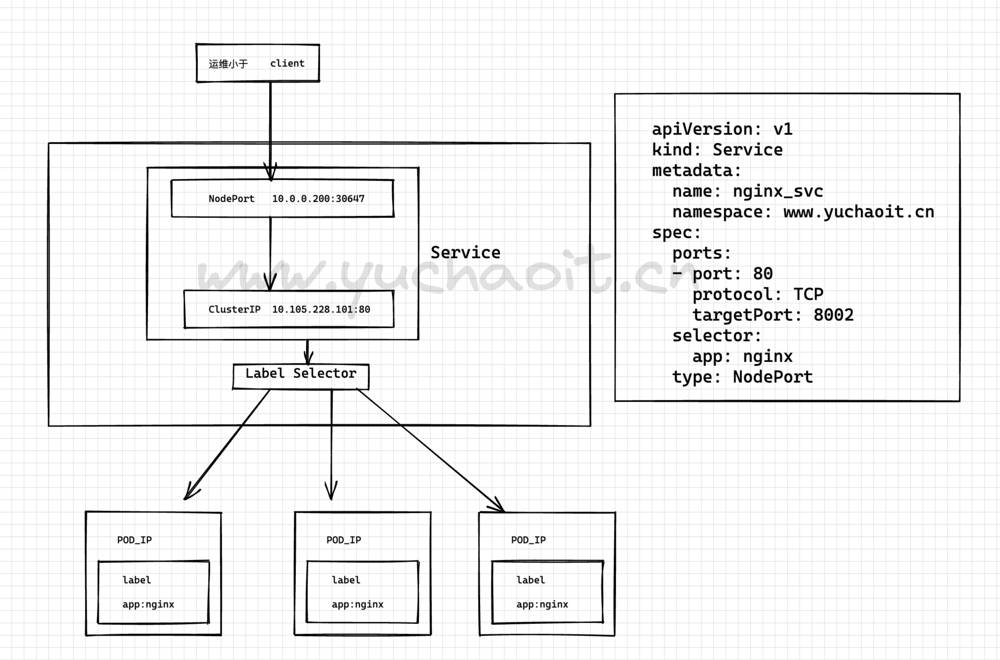
至此，知道如何创建pod发布应用，以及创建Servicce确保可以访问服务，就可以开始部署k8s环境。